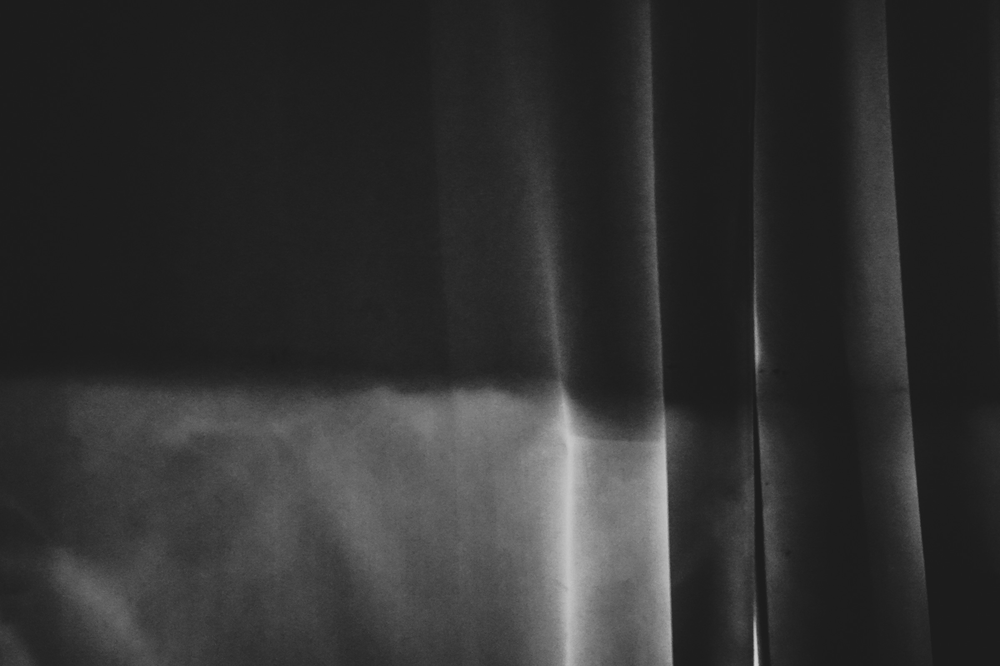

Qili Xu
About
Qili Xu’s practice mainly spans photography and video. Drawing from personal experience and everyday scenes, she focuses on reality, the experience of modernity, and their opposites. Her photographic works are often imbued with a sense of fantasy and dream, through which she seeks an alternative outlet to reality. In her video works, she explores resistance to speed, uniformity, and order through various forms of movement — walking crowds, shifting spaces, and repetitive gestures. All of these works attempt to connect individual experience with external structures through perception. Recently, she has been exploring more conceptual methodologies in her new work.